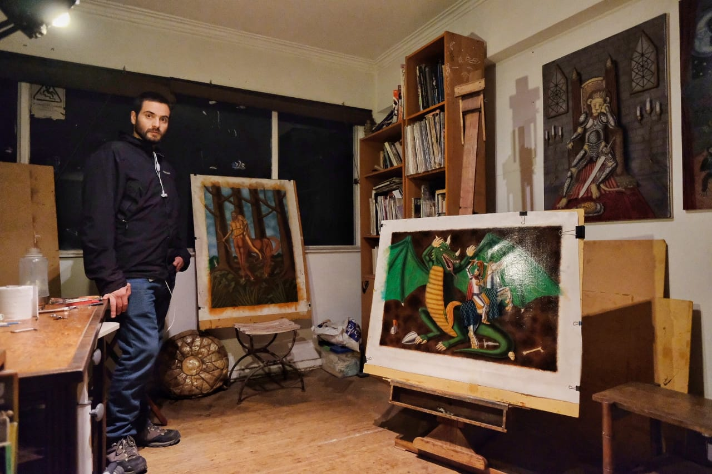

Martin Valdivia Micheli es un artista Chileno. Su técnica pictórica es el óleo a la veladura (técnica desarrollada en Europa en la época del Renacimiento y utilizada por grandes artistas como Leonardo da Vinci). Su estilo artístico es el Realismo-Mágico, que consiste en mezclar elementos de la fantasía e imaginación creativa del artista con elementos de la realidad física, de lo cual surgen nuevos y fascinantes mundos que emergen desde lo más profundo del alma. Su pasión por las bellas artes se expresó desde sus primeros años de edad. Sus padres, al verlo pasar horas, día tras día, derramando sus fantasías con lápices en hojas de papeles, casi en estado de trance y en una sagrada concentración, decidieron inscribirlo en su primera academia de pintura al óleo de la pintora chilena Alicia Argandoña a sus 5 años.
Desde los 9 a los 12 años, participa de la academia de dibujo al pastel de la artista chilena Adela Bustos.
A los 15 años se inscribe en el taller de pintura al óleo del Estadio Italiano.
En el 2005 estudio Dibujo en la academia de Bellas Artes del pintor realista español Martin Soria.
En 2006 deja por algunos años las Bellas Artes para desarrollar otra área de gran interés para el que es la Naturaleza y los Deportes al Aire Libre. Así que ingresa y se titula de la carrera de “Técnico en Turismo de Aventura” (Instituto Profesional Duoc UC) donde por 10 años recorre la naturaleza y las montañas, trabajando como Guía de Montañismo y Rescatista del Cuerpo de Socorro Andino de Chile.
Y en marzo de 2015, con gran nostalgia por las Bellas Artes y sintiendo que la naturaleza y las montañas ya le habían ofrecido todo lo que él esperaba de ellas, ingresa a estudiar en la academia de Bellas Artes del pintor realista-mágico chileno Hernán Valdovinos hasta diciembre de 2017, con el fin de desarrollas su amor por la pintura hasta su máximo esplendor.'